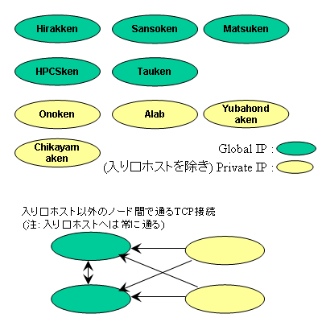

Grid Challenge in SACSIS 2005
Grid Challenge in SACSIS2005 参加者のためのページ
質問の宛先
注意
ホスト
GCF環境の情報を表にします。
| 通称 | 提供者(所在地) | 入口ホスト / コンパイルetc.用ホスト |
計算ノード名 | 計算ノード数/CPU数 | 計算ノードのIP | Matsuken "Prest III" | 東工大松岡研 | nimbus.titech.hpcc.jp / nimbus.titech.hpcc.jp |
pad000-012, pad014-020, pad031-046, pad048-057, pad059-112 |
100/200 | Global |
|---|---|---|---|---|---|
| Alab | 東工大合田研 | gk.alab.ip.titech.ac.jp / blade00.alab.ip.titech.ac.jp |
blade01-30 | 30/60 | Private |
| Tok | 徳島大小野研 | poole.is.tokushima-u.ac.jp / poole.is.tokushima-u.ac.jp |
mp20_001-014, mp20_016-033, mp20_035-052 |
50/100 | Private |
| X Cluster | 産総研グリッド研究センター | xcmp001.asc.hpcc.jp / xcmp001.asc.hpcc.jp |
xcmp002-033, xcmp035-042 |
40/80 | Global |
| HPCS | 筑波大HPCS研 | dennis-serv.omni.hpcc.jp / dennis-serv.omni.hpcc.jp |
dennis01-15, alice01-05 |
20/40 | Global |
| YubaHonda | 電通大弓場/本多研 | bluecore.is.uec.ac.jp / bluecore.is.uec.ac.jp |
comp11-16, comp21-26, comp31-36, comp41-46, comp101-126 |
50/100 | Private |
| Hirakken | 東大平木研 | suidobashi00.logos.ic.i.u-tokyo.ac.jp / suidobashi00.logos.ic.i.u-tokyo.ac.jp |
suidobashi01-36, suidobashi38-41 |
40/40 | Global |
| Chikayama | 東大近山研 | shepherd.logos.k.u-tokyo.ac.jp / sheep01 |
sheep02-64 | 63/126 | Private |
| Tau | 東大田浦研 | istbs000.i.u-tokyo.ac.jp / istbs000.i.u-tokyo.ac.jp |
istbs001-042, istbs044-082, istbs084-109 |
107/214 | Global |
| TOTAL | 合計 | - | - | 500/960 | - |
- 各ホストは、Suidobashiクラスタ(single)を除き、 dual CPUです。2CPU x 460ノード + 1CPU x 40ノード = 960CPUです。
- 各クラスタへログインする場合はまず、 「入口」と書かれているホストへ(ssh)ログインしてください。 入口以外の各ノードがPrivate IPアドレスしか持っておらず、 クラスタ外から直接ログインできない場合があります。
- クラスタ内で各ノードへログインする場合も、sshを用います。
- 各クラスタごとにコンパイルなどが必要な場合は、 「コンパイルetc.ホスト」と書かれているホストで行なって下さい。 入口ノードでコンパイルしたバイナリが、ノードでそのまま動かない場合があるので ご注意下さい。
- 各クラスタのホストでは、ホームディレクトリが共有されています。
注: クラスタ内のノード名に書かれているノードが、このコンテストの計算ノードと して提供される物のすべてです。1/30の時点で動作していることを確認していますが、 それ以降ノードの故障にともなって減ることもあります。再起動などで、一度 落ちたノードが生き返ることはありますが、ここにないホストが後から追加されることは (非常に多数のノードが事故などで失われない限り)ありません。
自身でどのノードでプロセスを立ち上げるかを決める場合は、ここにあるホストだけ を用いるようにプログラミングして下さい。 どんな場合も、本ページで「ノード名」に列挙されているホ ストと、入口ホスト以外の場所でコンテストのための計算をしてはなりません。 また、入口ホストは「主たる計算」(定義が曖昧ですが、規定課題における データファイルの読み込みや処理)を行なってはいけません。 これは入口ホストにあまり高い負荷を書けないための協定です。
故障ノードは適当なタイミングで更新し、故障情報として提供します。 また、 Gangliaモニタリングシステムの情報なども参照して下さい。
Ninf-Gのようなバッチキューイングシステムによる資源割当を用いている プログラミング環境では、利用可能なノードの集合を意識する必要はありませ ん。GXPでは故障ノードを使わないように明示的に設定した方が、利用が快適 になります。その設定ファイルは、各サイトにあらかじめ提供されます。
参加者にはどうでもいい情報ですが、ノードの半分以上は「21世紀COE情 報理工科学技術戦略コア」の予算で購入されています。「田浦研」は所在地情 報です(参加者にはどうでもいい情報おわり)。
ネットワーク構成
- 「任意ホスト -> Global IPアドレスを持つ任意ホスト」へのconnectionが許 されています。
- 「任意ホスト -> 同一クラスタ内の任意ホスト」へのconnectionが許されて います。
- いいかえれば、「Private IPアドレスホストへ、クラスタ外からは直接connetで きない」という当然の制限を除けば、すべてが許可されています。
|  |
提供されるプログラミング環境
- Ninf-G : マスタ-ワーカスタイルのプログラムを分散環境上で簡便に記述 できるプログラミングモデルです。ノードがシステムによって割り当てられる ため、故障情報などを意識する必要がありません。Ninf-Gの手引については解説とサンプルプログラム集をダウンロードし て下さい。同パッケージ中のガイドラインはこちら をごらんください。
- GXP : sshを用いて多数のノードへ同時ログインし、利用できるツールで す。対話的な利用の他、単純な並列処理を容易に記述できる機能も備えていま す。詳しい手引についてはこちらをごらんください。
- MPI : 各クラスタ上でMPIジョブが起動可能です。ただし、クラスタを跨っ
て、一つのMPIジョブを起動することはできません。必要であれば各クラスタ上で
別途MPIを起動し、それらを連係させて下さい。
MPIを利用するには、各クラスタのコンパイルホスト上で、 ~tau/local/Linux にPATHを張ると、mpicc, mpirun などが利用可能になります。 ~tau/grch/mpi_machines/ 以下に各クラスタ用machinesファイルのサンプルを おきました。
mpich-1.2.6 を以下のconfigurationでbuildしています。
./configure --prefix=`echo ~tau/local/Linux` --with-device=ch_p4 --without-mpe --without-romio
アカウントができたら
- 自分のホストから、「入口」ホストへログインできること。
普段使っているログイン名と、おそらくログイン名が違うので、間違えないようにして下さい。
例:
your_host$ ssh grch001@istbs000.i.u-tokyo.ac.jp passphrase for ...: (パスフレーズが空でなければ聞かれる)
うまくいかなければ、your_host$ ssh -v grch001@istbs000.i.u-tokyo.ac.jp
として起動して下さい。メッセージを見て原因がわかれば直し、わからなけれ ばメッセージのログとともに、 grid-challenge-admins@logos.ic.i.u-tokyo.ac.jp へメールをして下さい。 - ssh-agent/ssh-addを使うと一度パスフレーズを入力するだけで、いろい
ろなホストへsshすることができるはずです。また、エージェントの転送機能
(-Aオプションまたは -o 'ForwardAgent yes')を使うと、自分のホストからだけではなく、入口ホスト間もいったり来たり
することができるはずです。例:
# sshエージェント your_host$ eval `ssh-agent` your_host$ ssh-add passphrase for ...: (パスフレーズが空でなければ聞かれる) your_host$ ssh grch123@istbs000.i.u-tokyo.ac.jp (もう聞かれないはず) istbs000$ logout # エージェント転送機能 your_host$ ssh -A grch123@shepherd.logos.k.u-tokyo.ac.jp shepherd$ ssh grch123@istbs000.i.u-tokyo.ac.jp (ホスト間を渡り歩けるはず) istbs000$
- すべての入口ホストに一度ずつログインする シェルスクリプトを用意しましたので、アカウントが到着次第、必要なら ば使って下さい。スクリプト中のログイン名は手で置き換えて下さい。
menu
what's new
Grid Challenge in SACSIS 2005